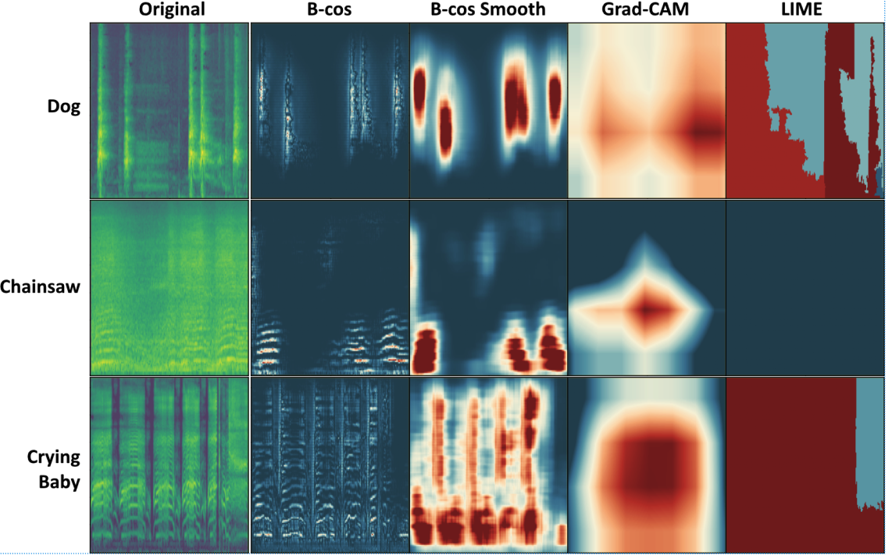
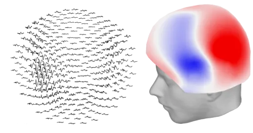
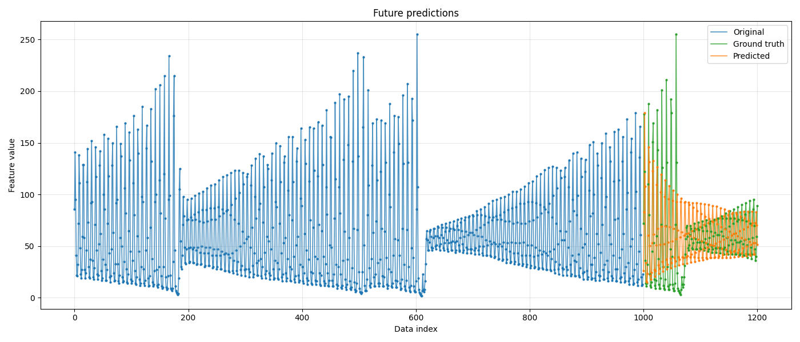
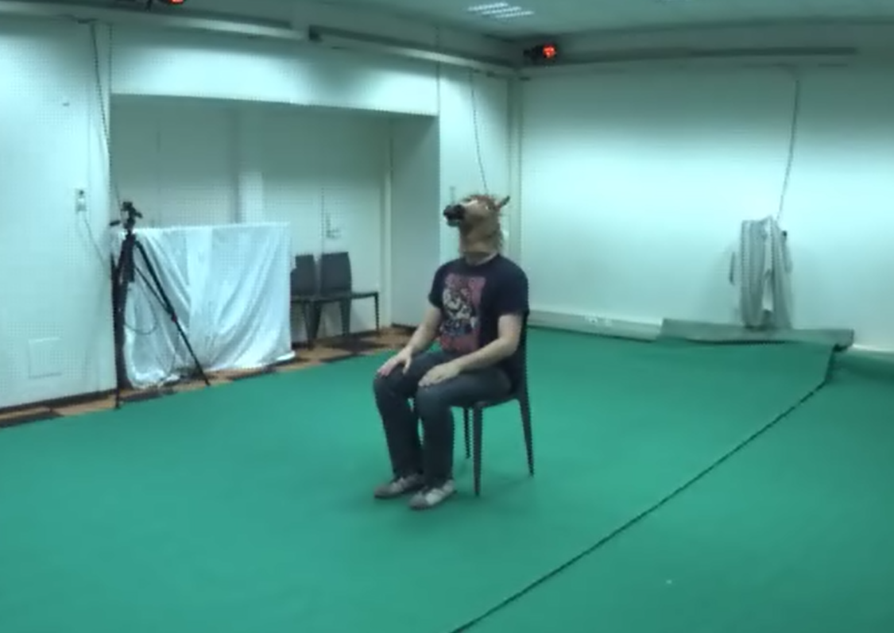
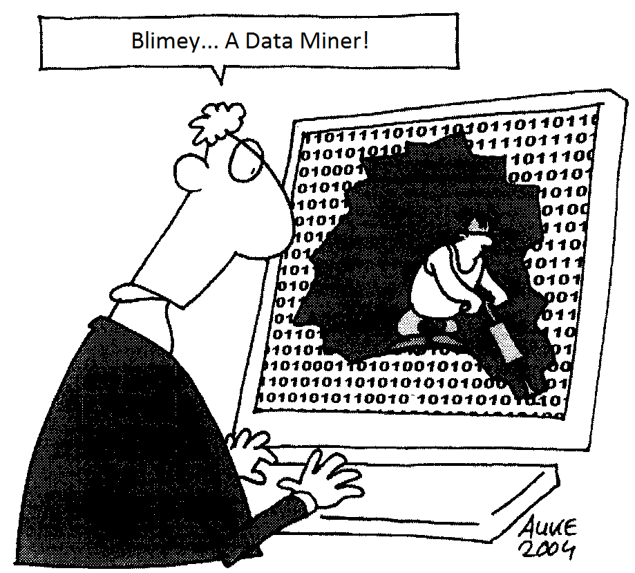
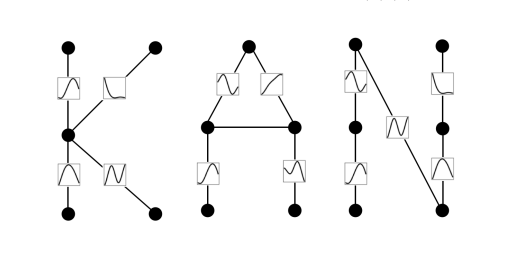

Projects Since I am still a student and am eager to learn, I am constantly starting new projects, big and small. This page contains an overview of some of the more interesting projects I have been a part of over the years that do not have their own clear dedicated sections elsewhere.
Projects
6
For the Master's course Human Centered Machine Learning our group project investigated the applicability of B-cos networks for audio classification.

For the Master's course Deep Learning our group project focussed on MEG classification using complex and state of the art deep learning models.

For the Master's course Deep Learning our group project focussed on time series prediction for LASER measurements (a chaotic system).

For the Master's course Computer Vision, one of our assignments consisted of 3D voxel reconstruction based on multiple camera perspectives.

For the Master's course Data Mining our group project applied different classical AI models to a hotel review dataset to classify their authenticities.

An unfinished use case analysis of KANs against 5 other common models on 9 datasets.